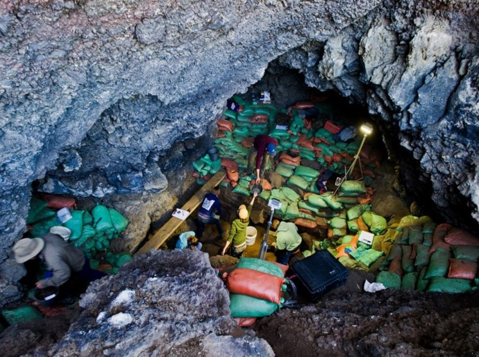

Grant Snitker
Environmental Archaeologist
Home
Research
Publications
Data and Code
Field Photos
Contact
Fieldwork on Okanogan-Wenatchee NF, Washington
LEIA Project, Mallorca, Spain
Fieldwork and Charcoal Sampling, Valencia, Spain
Piedmont Soil Sampling, Georgia
Survey & Paleoeoclogical Sampling, Northern Arizona

University of Oregon Field School, Paisley Caves, Oregon
Wildland Firefighting